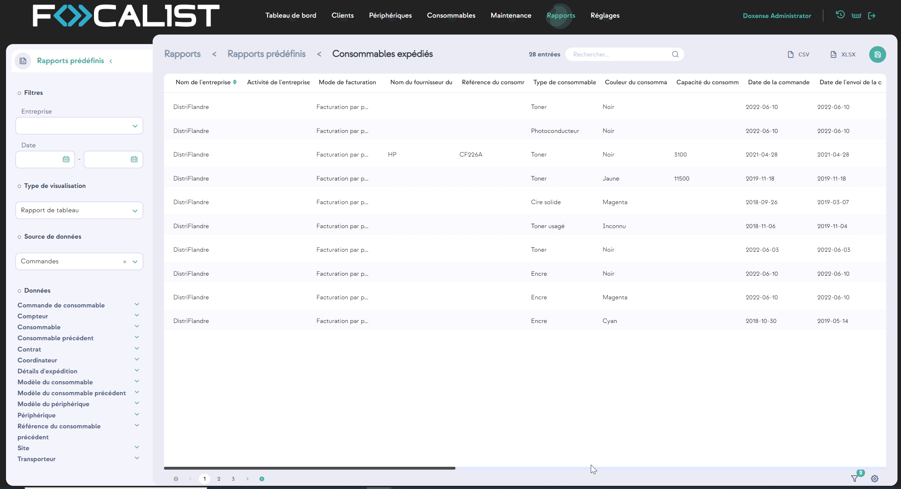
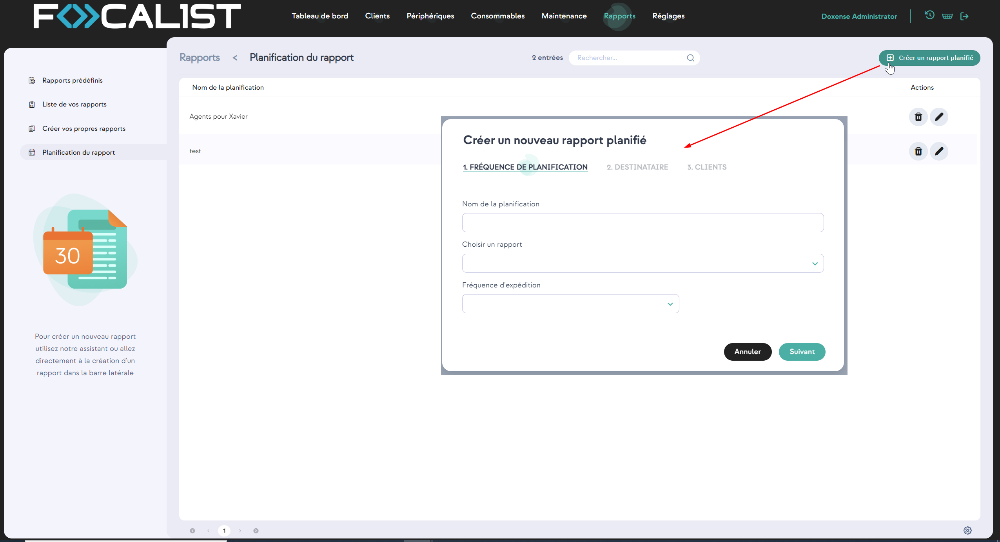
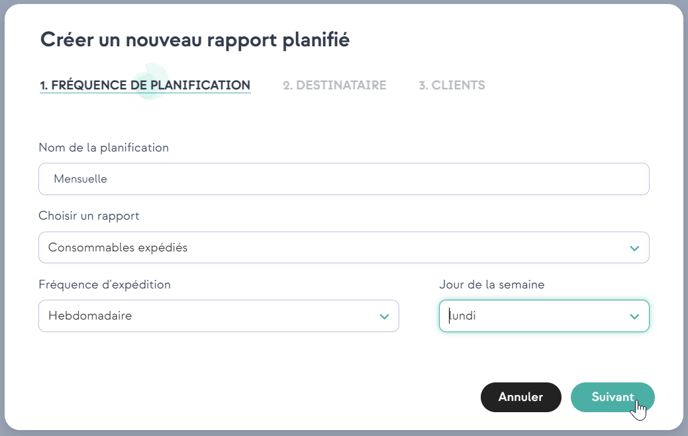
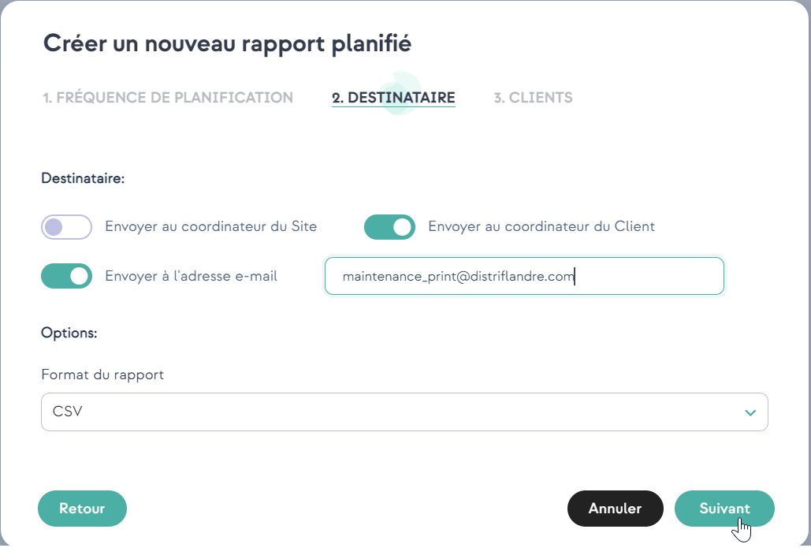
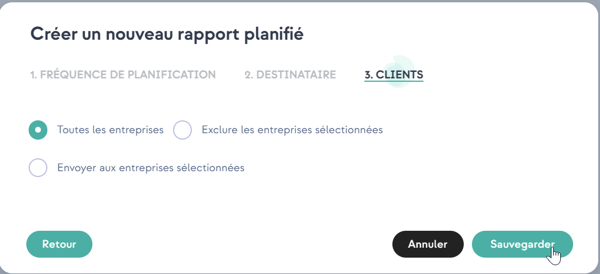

Rapports
Les rapports sont des informations statistiques qui peuvent être générés à partir des informations collectées par Focalist. Ils peuvent être enregistrés au format CSV ou XLSX.
Chaque rapport peut être téléchargé instantanément. Pour ce faire, vous devez cliquer sur le bouton Actions avec l’œil en miniature. Sélectionnez ensuite les clients que vous souhaitez couvrir. Pour télécharger le rapport, sélectionnez CSV ou XLSX dans le coin supérieur droit (la génération du rapport peut prendre un certain temps, le changement de la couleur de l’inscription en gris clair signifie que le processus de génération a commencé. Une fois terminé, il retrouvera sa couleur normale).

Outre la possibilité de télécharger des rapports à partir de l’application, il est également possible de programmer l’envoi de rapports par courrier électronique aux personnes sélectionnées. Vous pouvez le faire en cliquant sur le bouton d’action avec le symbole représentant une horloge.
Pour savoir comment ajouter des planificateurs, consultez la section Planification de rapports :
Rapports prédéfinis
Les rapports présentés ici sont préparés de haut en bas par l’équipe de Focalist. Ils contiennent des ensembles de données collectées sous forme de rapports qui sont le plus souvent utilisés par les clients. Il a été créé sur la base de notre expérience et de nombreuses consultations avec les clients et leurs besoins. Ces rapports ne peuvent être ni modifiés ni effacés, la seule option de personnalisation consiste à créer votre propre rapport à partir de ces rapports.
Liste des rapports
Rapports personnalisés créés par les utilisateurs. Ils sont identiques aux rapports prédéfinis, la seule différence étant qu’ils peuvent être supprimés et définis comme des rapports privés. Les rapports privés ne seront pas visibles pour les autres comptes.
Créer votre propre rapport
Vous pouvez créer vos propres rapports dans cette section. Pour ce faire, vous avez deux options :
Utiliser l’assistant pour créer un rapport
Il est recommandé d’utiliser cette option pour les nouveaux utilisateurs. En la choisissant, l’application vous demandera, étape par étape, les informations que vous souhaitez voir figurer dans le rapport.
Créer un rapport manuellement
Avec cette option, vous êtes automatiquement déplacé vers le panneau de personnalisation, il est recommandé aux utilisateurs plus expérimentés de l’utiliser.
Planification de rapports
Vous pouvez définir un planificateur qui enverra par courrier électronique les rapports choisis à intervalles réguliers. Pour ajouter un planificateur, vous devez cliquer sur le bouton « Créer un planificateur de rapport » qui se trouve dans le coin droit.
Lors de la première étape, vous devez définir le nom du planificateur, choisir le rapport et la fréquence.

Ensuite, vous définissez le destinataire de l’e-mail et choisissez le type de document (CSV ou XLSX) :


Enfin, vous choisissez les clients dont vous souhaitez obtenir des informations qui figureront dans les rapports :
